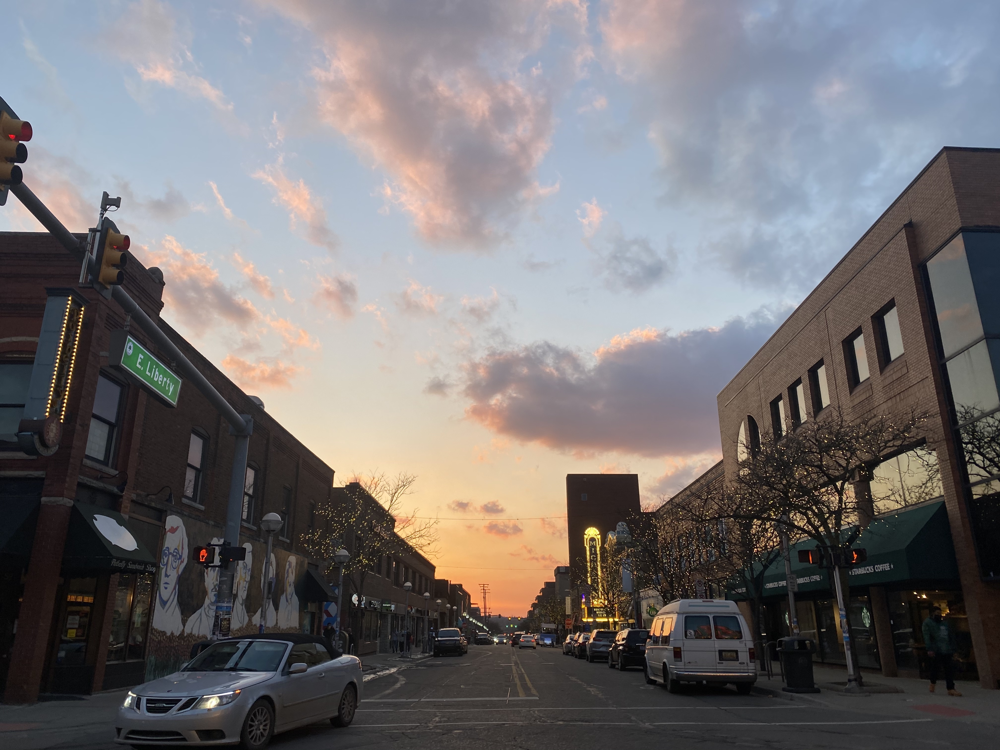
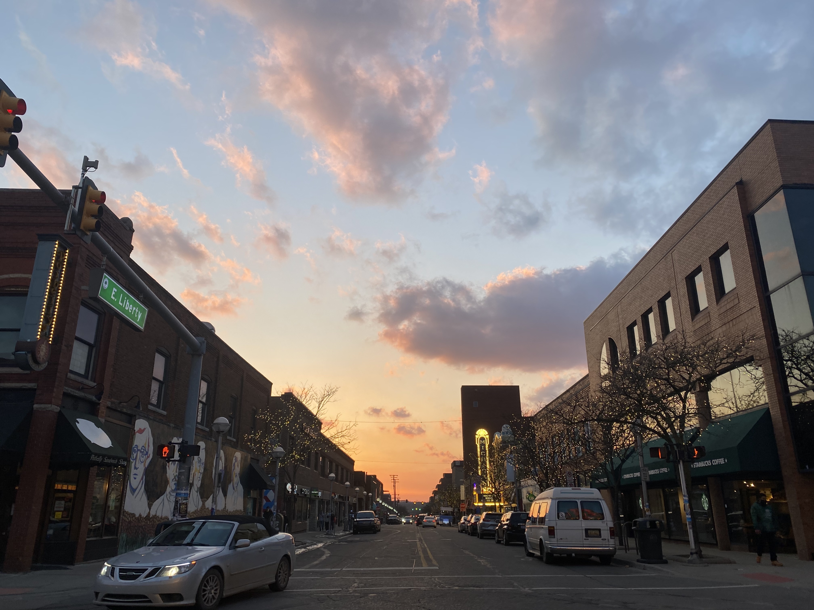

Hobbies
Biking
This summer, I got into road biking. Ever since, I go on daily excursions to a local park to sweat my stress away. In Ann Arbor, my favorite biking trail is from Gallup Park through Matthei Bontanical Gardens. At home, I ride the Schuylkill River Trail, Chester Valley Trail, and more. See my rides here!
Hiking & Walking
At Michigan and beyond, I love to explore my local environment on long walks through nature. Some of my favorite areas to pass through include the local neighborhoods and the Nichols Arboretum, but the best adventures are usually finding somewhere new!
Art
Photography has always been another passion of mine. Recently, I also have been getting into graphic design. I sometimes combine these passions by taking photos and editing them with unique styles or designs.
Gallery


 
